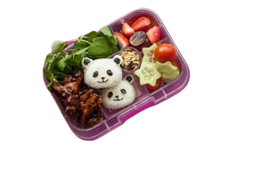

Close
Back

Ingredients
- 50g sushi rice, cooked according to packet instructions
- tsp sushi vinegar
- 1 sheet nori seaweed
- 6cm piece of cucumber
- 100g cooked chicken breast slices
- 1 tbsp teriyaki sauce
- Large handful watercress
- Small handful cherry tomatoes, quartered
- 2 tbsp mixed nuts and seeds (chop the nuts into smaller pieces)
- Small handful grapes, quartered
- 3 strawberrries, quartered
Cooking Steps
- Take your rice mould and dip the main part of the mould in cold water to help prevent the rice from sticking. Pack the mould full of cooked sushi rice, making sure that any small, detailed sections such as the ears are well packed.
- Take the press and dip this in cold water before using to press the rice firmly into the mould, ensuring the rice is packed tightly so that it keeps its shape once turned out. If you do not have a mould you can simply shape the rice into firm balls using wet hands.
- Carefully turn the panda shaped rice out of the mould. Take your nori sheet and use the cutter to punch shapes out of it. Use your fingers to carefully position the pieces of nori onto the rice so that it resembles the face of a panda
- Refrigerate until needed, up to 24 hours before using
- Slice your cucumber into 1/2cm-thick rounds. Take your star or heart-shaped cutter and cut a shape from each cucumber round.
- Toss the sliced, cooked chicken in the teriyaki sauce until well coated.
- Finally assemble your bento box by placing the panda rice, chicken, watercress, cucumber, tomatoes and fruit into the box in a neat and tidy arrangement.